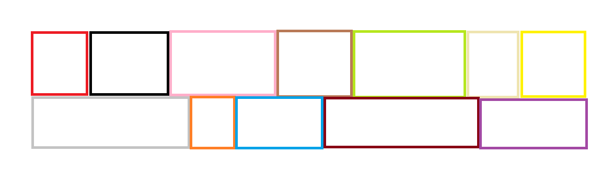

Mosaic Drawing Practice
This is a BMP file I created using paint.
By using an app like Paint I can see which colors easily could go together or simulate patterns Id like to try in the real world
This is a BMP file I created using paint.
By using an app like Paint I can see which colors easily could go together or simulate patterns Id like to try in the real world